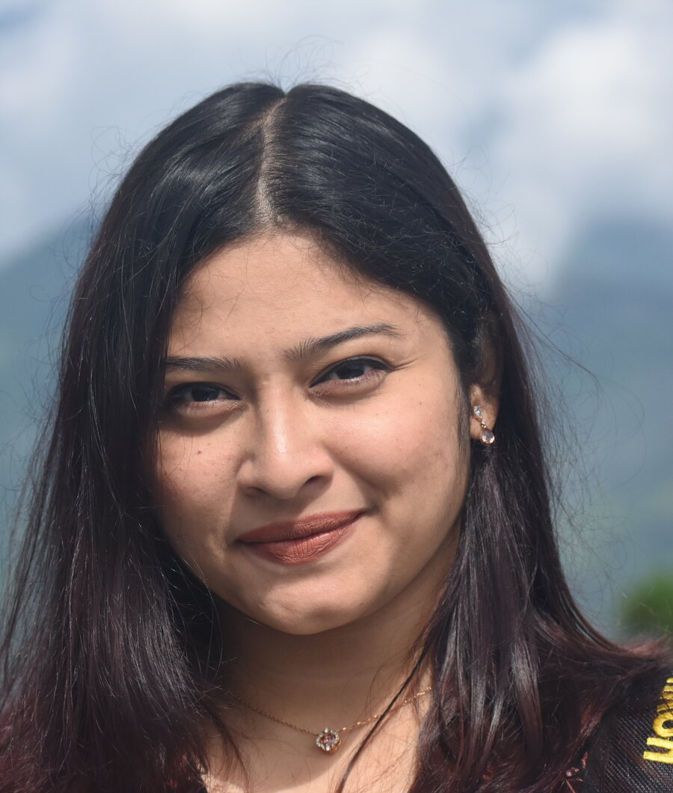

PhD Scholar · Child Health Nursing
Meghna Pandit
Department of Child Health Nursing, Manipal College of Nursing, MAHE, Manipal
I am a PhD Scholar in the Department of Child Health Nursing at Manipal College of Nursing, MAHE, Manipal, since 2 November 2023. My research sits at the intersection of nursing, pediatric oncology, and oral health, and centres on developing evidence-informed oral care guidelines for children with cancer. Alongside my doctoral work, I teach labs, demonstrations, and theory classes in Child Health Nursing to undergraduate and postgraduate students. My background also includes clinical experience in paediatric and neonatal nursing, and nurse education in Kolkata.
Academic Appointments
-
Nov 2023 – Present
PhD Scholar
Department of Child Health Nursing, Manipal College of Nursing, MAHE, Manipal
Researching pediatric oncology and oral health, while teaching labs, demonstrations, and theory classes to undergraduate and postgraduate nursing students.
-
10 Oct 2022 – 20 Oct 2023
Senior Tutor
Charnock College of Nursing, New Town, Kolkata
Supported students in reaching curriculum goals through tailored coaching, tracked academic progress, maintained Individual Learning Plans, and assisted in operational management of the curriculum area.
Clinical Practice
-
17 Jul 2019 – 31 Aug 2020
Staff Nurse
Spandan Hospital, Teghoria, Kolkata
Delivered care and supported the safety and treatment goals of patients in the paediatric ward, with rotational allocations in the Neonatal ICU and Mother & Baby Care wards.
Courses Taught
Child Health Nursing — BSc, Post-Basic BSc (PBBSc), and MSc Nursing students.
Education
2022
MSc, Child Health Nursing
Manipal College of Nursing, Manipal, Karnataka, India
Graduated with an aggregate of 82.8% — First Class with Distinction.
Dissertation: “A cross-sectional study to assess the impact of the COVID-19 lockdown on Health-Related Quality of Life, mental well-being and daily routines among high school children in selected schools of Udupi District, Karnataka.”
2019
BSc Nursing
Manipal College of Nursing, Manipal, Karnataka, India
Graduated with an aggregate of 76.4% — First Class with Distinction.
Included six months of nursing internship experience.
Licensure & Certifications
- Karnataka State Nursing Council — RN/RM No. 98972 (Registered 2019)
- NRP Certified
- BLS Certified
Publications & Scholarship
Research interests: Child Health Nursing · Pediatric Oncology · Evidence Based Practice · Translational Research
-
Impact of Covid-19 lockdown on health-related quality of life, mental well-being, and daily routines among high school children of Udupi District, Karnataka, India: A cross-sectional study
-
Global Standards and Protocols for Oral Care in Pediatric Cancer Patients: Systematic Review Protocol
-
Academic Stress, Performance, and Satisfaction among Undergraduate Nursing Students under the Semester System
Awards & Conference Presentations
-
23–24 Sep 2024
Global Standards and Protocols for Oral Care in Pediatric Cancer Patients: A Systematic Review
3rd National Pediatric Oncology Nursing Conference · Organized by Tata Memorial Hospital, Mumbai · Parel, Mumbai
★ Awarded first place for oral paper presentation
-
23–24 May 2025
Safety and Effectiveness of Chlorhexidine Mouthwash in Pediatric Cancer Patients: A Systematic Review
National Conference on Transforming Pediatric Nursing: Bridging Research, Advocacy and Practice for Better Outcomes · Organized by KAHER, Institute of Nursing Sciences (INS) · Belagavi, Karnataka
-
8–9 Jul 2025
Determining Dietary and Nutritional Needs for Children with Cancer Undergoing Treatment: A Scoping Review
Manipal International Conference for Equity, Diversity and Inclusion in Healthcare · Organized by Manipal College of Nursing, MAHE, Manipal, and University of New Brunswick (UNB), Canada · Manipal, Udupi
-
17–19 Sep 2025
Use of Antifungal Agents in Pediatric Oncology Patients: A Systematic Review
4th National Pediatric Oncology Nursing Conference · Organized by Tata Memorial Hospital, Mumbai · ACTREC, Kharghar, Mumbai
★ Awarded first place for oral paper presentation
-
28 Nov 2025
Current Global Practices in Preventing and Managing Oral Complications in Pediatric Cancer: A Narrative Review
28th Annual Pediatric Hematology Oncology Conference · Organized by the Pediatric Hematology and Oncology Chapter, IAP, with KMC Manipal and MCON Manipal · Manipal, Udupi
-
Nov 2025
Invited Speaker — “Managing complications of chemotherapy: nausea, vomiting and mucositis”
Nursing Workshop, Pediatric Hematology-Oncology Conference
-
13–14 Dec 2025
Oral Care Practices, Challenges, and Perspectives in Indian Pediatric Oncology: A Qualitative Analysis of Nurses, Physicians, and Parents’ Experiences
6th International and 24th National ONAI Conference · Organized by the Oncology Nurses Association of India (ONAI) and Tata Medical Center, Kolkata · New Town, Kolkata
★ Awarded second place for oral paper presentation
-
12–13 May 2026
A study to develop evidence informed oral care guidelines for Indian context and find its effectiveness on oral health status of children with cancer receiving chemotherapy
Manipal Research Colloquium 2026 · Organized by MAHE, Manipal · Manipal, Karnataka
Professional Memberships
Member, Oncology Nurses Association of India (ONAI)
Volunteer & Humanitarian Work
College Coordinator, Volunteer Services Organisation (VSO), Manipal Academy of Higher Education (MAHE) — coordinated multiple fundraising events, 2015–2022.
Core Qualifications & Skills
- Sound knowledge of nursing administration
- Ability to motivate staff members for various activities
- Concept explanations
- Documentation
- Proficient in Microsoft Office applications
- Eye for accuracy
- Compassionate care
- Fast learner
Languages
- Bengali — First Language
- English — C2, Proficient
- Hindi — C2, Proficient
- Kannada — B1, Intermediate